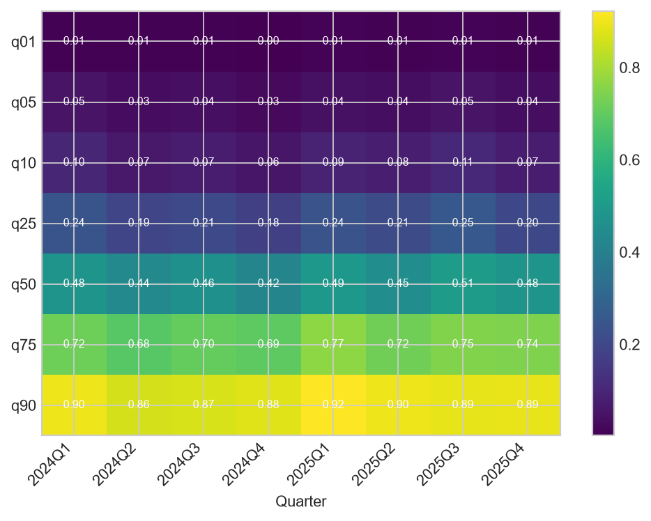
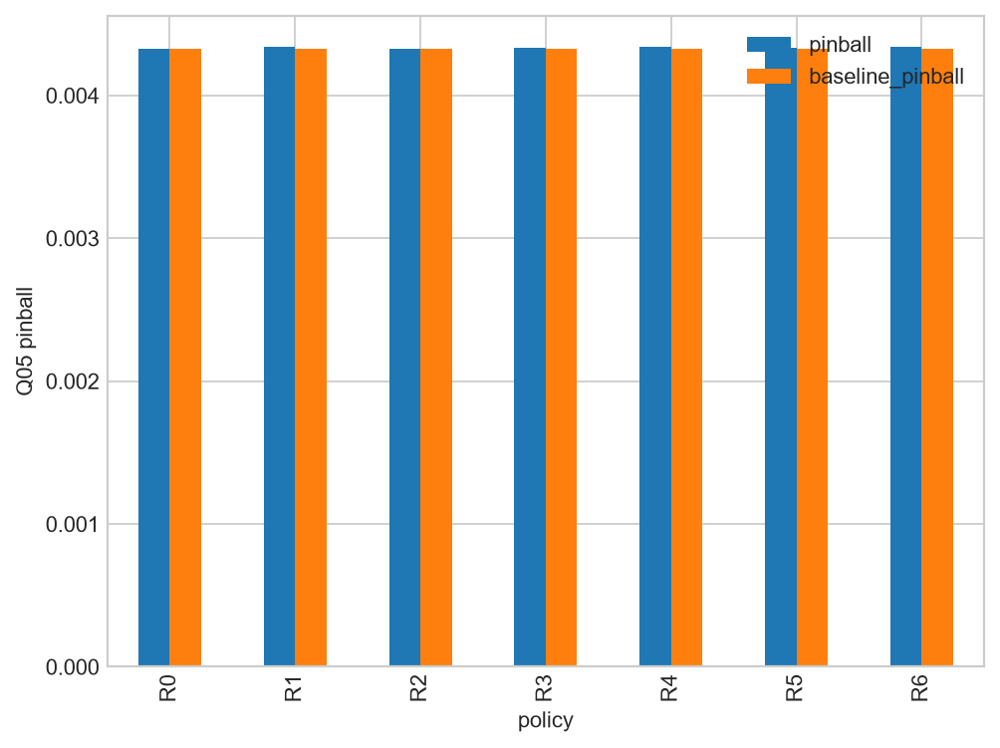

Scientific status: This is a v1.1 diagnostic validation extension. The original v1 locked result is unchanged. Post-hoc findings and pseudo-live recalibration are not new confirmatory holdout results.
Rows stored: 792. The table below is a concise view; complete evidence is in Parquet and the v1.1 DuckDB.
| model | scope | group | quantile | nominal | n | empirical_coverage | coverage_error | coverage_ci_low | coverage_ci_high | pinball | tail_underestimate_frequency | tail_underestimate_severity | conditional_tail_severity | interval_width | interval_score |
|---|---|---|---|---|---|---|---|---|---|---|---|---|---|---|---|
| B1_peer | overall | all | q01 | 0.01 | 30087 | 0.0107355 | 0.000735534 | 0.00963193 | 0.0119641 | 0.0020268 | 0.0107355 | 0.00085297 | 0.0794529 | NaN | NaN |
| B1_peer | overall | all | q05 | 0.05 | 30087 | 0.0596603 | 0.00966032 | 0.0570398 | 0.0623933 | 0.0054149 | 0.0596603 | 0.00230085 | 0.0385658 | NaN | NaN |
| B1_peer | overall | all | q10 | 0.1 | 30087 | 0.12198 | 0.0219796 | 0.11833 | 0.125726 | 0.00827036 | 0.12198 | 0.00382384 | 0.0313482 | NaN | NaN |
| B1_peer | overall | all | q25 | 0.25 | 30087 | 0.309868 | 0.059868 | 0.304667 | 0.315117 | 0.013784 | 0.309868 | 0.00864946 | 0.0279134 | NaN | NaN |
| B1_peer | overall | all | q50 | 0.5 | 30087 | 0.598066 | 0.0980656 | 0.592513 | 0.603593 | 0.0176913 | 0.598066 | 0.0196529 | 0.0328608 | NaN | NaN |
| B1_peer | overall | all | q75 | 0.75 | 30087 | 0.837737 | 0.0877372 | 0.833528 | 0.84186 | 0.0161367 | 0.837737 | 0.04154 | 0.0495859 | NaN | NaN |
| B1_peer | overall | all | q90 | 0.9 | 30087 | 0.946987 | 0.0469871 | 0.944398 | 0.949462 | 0.0111538 | 0.946987 | 0.0772049 | 0.0815269 | NaN | NaN |
| B1_peer | overall | all | q01_q90 | 0.89 | 30087 | 0.936252 | 0.0462515 | 0.933435 | 0.938957 | NaN | NaN | NaN | NaN | 0.190774 | 0.275641 |
| B1_peer | overall | all | q05_q90 | 0.85 | 30087 | 0.887327 | 0.0373268 | 0.883704 | 0.89085 | NaN | NaN | NaN | NaN | 0.135671 | 0.217213 |
| B1_peer | overall | all | q10_q90 | 0.8 | 30087 | 0.825007 | 0.0250075 | 0.820673 | 0.829259 | NaN | NaN | NaN | NaN | 0.117855 | 0.194241 |
| B1_peer | overall | all | q25_q75 | 0.5 | 30087 | 0.527869 | 0.0278692 | 0.522225 | 0.533506 | NaN | NaN | NaN | NaN | 0.0544091 | 0.119683 |
| B1_peer | quarter | 2024Q1 | q01 | 0.01 | 3916 | 0.0150664 | 0.00506639 | 0.0116986 | 0.0193846 | 0.00181092 | 0.0150664 | 0.000746353 | 0.0495376 | NaN | NaN |
| B1_peer | quarter | 2024Q1 | q05 | 0.05 | 3916 | 0.0865679 | 0.0365679 | 0.0781608 | 0.0957854 | 0.00528788 | 0.0865679 | 0.00272194 | 0.0314428 | NaN | NaN |
| B1_peer | quarter | 2024Q1 | q10 | 0.1 | 3916 | 0.173647 | 0.0736466 | 0.162104 | 0.185829 | 0.00823742 | 0.173647 | 0.0048877 | 0.0281474 | NaN | NaN |
| B1_peer | quarter | 2024Q1 | q25 | 0.25 | 3916 | 0.414964 | 0.164964 | 0.399623 | 0.430472 | 0.0138261 | 0.414964 | 0.011443 | 0.0275759 | NaN | NaN |
| B1_peer | quarter | 2024Q1 | q50 | 0.5 | 3916 | 0.727017 | 0.227017 | 0.712847 | 0.740743 | 0.0178846 | 0.727017 | 0.0253707 | 0.034897 | NaN | NaN |
| B1_peer | quarter | 2024Q1 | q75 | 0.75 | 3916 | 0.899642 | 0.149642 | 0.889836 | 0.908665 | 0.0163646 | 0.899642 | 0.0500789 | 0.0556653 | NaN | NaN |
| B1_peer | quarter | 2024Q1 | q90 | 0.9 | 3916 | 0.965526 | 0.065526 | 0.95934 | 0.970799 | 0.0112171 | 0.965526 | 0.0872818 | 0.0903982 | NaN | NaN |
| B1_peer | quarter | 2024Q1 | q01_q90 | 0.89 | 3916 | 0.95046 | 0.0604597 | 0.943211 | 0.956826 | NaN | NaN | NaN | NaN | 0.190973 | 0.254825 |
| B1_peer | quarter | 2024Q1 | q05_q90 | 0.85 | 3916 | 0.878958 | 0.0289581 | 0.868369 | 0.888804 | NaN | NaN | NaN | NaN | 0.135835 | 0.209001 |
| B1_peer | quarter | 2024Q1 | q10_q90 | 0.8 | 3916 | 0.791879 | -0.00812053 | 0.778882 | 0.804305 | NaN | NaN | NaN | NaN | 0.118014 | 0.194546 |
| B1_peer | quarter | 2024Q1 | q25_q75 | 0.5 | 3916 | 0.484678 | -0.0153218 | 0.469048 | 0.500338 | NaN | NaN | NaN | NaN | 0.0544845 | 0.120763 |
| B1_peer | quarter | 2024Q2 | q01 | 0.01 | 3878 | 0.00850954 | -0.00149046 | 0.00606574 | 0.0119261 | 0.00173271 | 0.00850954 | 0.000540881 | 0.0635618 | NaN | NaN |
| B1_peer | quarter | 2024Q2 | q05 | 0.05 | 3878 | 0.0402269 | -0.00977308 | 0.034484 | 0.0468798 | 0.00469772 | 0.0402269 | 0.0014947 | 0.0371566 | NaN | NaN |
| B1_peer | quarter | 2024Q2 | q10 | 0.1 | 3878 | 0.0948943 | -0.00510572 | 0.0860671 | 0.104523 | 0.00720462 | 0.0948943 | 0.00257962 | 0.0271841 | NaN | NaN |
| B1_peer | quarter | 2024Q2 | q25 | 0.25 | 3878 | 0.29345 | 0.0434502 | 0.279329 | 0.30798 | 0.0125449 | 0.29345 | 0.00696972 | 0.023751 | NaN | NaN |
| B1_peer | quarter | 2024Q2 | q50 | 0.5 | 3878 | 0.57968 | 0.0796802 | 0.564073 | 0.59513 | 0.0165327 | 0.57968 | 0.0176197 | 0.0303956 | NaN | NaN |
| B1_peer | quarter | 2024Q2 | q75 | 0.75 | 3878 | 0.82852 | 0.0785199 | 0.816333 | 0.840057 | 0.0150387 | 0.82852 | 0.0391341 | 0.0472337 | NaN | NaN |
| B1_peer | quarter | 2024Q2 | q90 | 0.9 | 3878 | 0.942496 | 0.0424961 | 0.934722 | 0.949395 | 0.0100986 | 0.942496 | 0.0746189 | 0.0791716 | NaN | NaN |
| B1_peer | quarter | 2024Q2 | q01_q90 | 0.89 | 3878 | 0.933987 | 0.0439866 | 0.925734 | 0.94138 | NaN | NaN | NaN | NaN | 0.190872 | 0.253973 |
| B1_peer | quarter | 2024Q2 | q05_q90 | 0.85 | 3878 | 0.902269 | 0.0522692 | 0.892521 | 0.911221 | NaN | NaN | NaN | NaN | 0.13575 | 0.194741 |
| B1_peer | quarter | 2024Q2 | q10_q90 | 0.8 | 3878 | 0.847602 | 0.0476019 | 0.835946 | 0.858569 | NaN | NaN | NaN | NaN | 0.117939 | 0.173032 |
| B1_peer | quarter | 2024Q2 | q25_q75 | 0.5 | 3878 | 0.53507 | 0.0350696 | 0.519345 | 0.550725 | NaN | NaN | NaN | NaN | 0.0544281 | 0.110334 |
| B1_peer | quarter | 2024Q3 | q01 | 0.01 | 3834 | 0.00834637 | -0.00165363 | 0.00591844 | 0.0117585 | 0.0017342 | 0.00834637 | 0.000486066 | 0.0582368 | NaN | NaN |
| B1_peer | quarter | 2024Q3 | q05 | 0.05 | 3834 | 0.0539906 | 0.00399061 | 0.047273 | 0.0616011 | 0.00521792 | 0.0539906 | 0.00174308 | 0.032285 | NaN | NaN |
| B1_peer | quarter | 2024Q3 | q10 | 0.1 | 3834 | 0.106155 | 0.00615545 | 0.0967961 | 0.116303 | 0.00827226 | 0.106155 | 0.00310803 | 0.0292781 | NaN | NaN |
| B1_peer | quarter | 2024Q3 | q25 | 0.25 | 3834 | 0.261868 | 0.0118675 | 0.248194 | 0.276017 | 0.0141212 | 0.261868 | 0.00721028 | 0.0275341 | NaN | NaN |
| B1_peer | quarter | 2024Q3 | q50 | 0.5 | 3834 | 0.535733 | 0.0357329 | 0.519919 | 0.551476 | 0.0184255 | 0.535733 | 0.016851 | 0.0314541 | NaN | NaN |
| B1_peer | quarter | 2024Q3 | q75 | 0.75 | 3834 | 0.794992 | 0.0449922 | 0.781921 | 0.807473 | 0.0168132 | 0.794992 | 0.0369226 | 0.0464439 | NaN | NaN |
| B1_peer | quarter | 2024Q3 | q90 | 0.9 | 3834 | 0.935055 | 0.0350548 | 0.926811 | 0.942428 | 0.0118417 | 0.935055 | 0.0716198 | 0.0765943 | NaN | NaN |
| B1_peer | quarter | 2024Q3 | q01_q90 | 0.89 | 3834 | 0.926708 | 0.0367084 | 0.918025 | 0.934538 | NaN | NaN | NaN | NaN | 0.191234 | 0.294612 |
| B1_peer | quarter | 2024Q3 | q05_q90 | 0.85 | 3834 | 0.881064 | 0.0310642 | 0.870434 | 0.890931 | NaN | NaN | NaN | NaN | 0.135917 | 0.228488 |
| B1_peer | quarter | 2024Q3 | q10_q90 | 0.8 | 3834 | 0.828899 | 0.0288993 | 0.816651 | 0.840489 | NaN | NaN | NaN | NaN | 0.118062 | 0.20114 |
| B1_peer | quarter | 2024Q3 | q25_q75 | 0.5 | 3834 | 0.533125 | 0.0331247 | 0.517307 | 0.548876 | NaN | NaN | NaN | NaN | 0.0544562 | 0.123738 |
| B1_peer | quarter | 2024Q4 | q01 | 0.01 | 3790 | 0.0113456 | 0.00134565 | 0.00843419 | 0.0152467 | 0.00209192 | 0.0113456 | 0.000842424 | 0.0742509 | NaN | NaN |
| B1_peer | quarter | 2024Q4 | q05 | 0.05 | 3790 | 0.0488127 | -0.00118734 | 0.0423977 | 0.0561413 | 0.00560656 | 0.0488127 | 0.00211209 | 0.0432693 | NaN | NaN |
| B1_peer | quarter | 2024Q4 | q10 | 0.1 | 3790 | 0.0952507 | -0.00474934 | 0.0863102 | 0.105011 | 0.00854669 | 0.0952507 | 0.00333864 | 0.0350511 | NaN | NaN |
| B1_peer | quarter | 2024Q4 | q25 | 0.25 | 3790 | 0.240897 | -0.0091029 | 0.22755 | 0.254769 | 0.0140898 | 0.240897 | 0.00706724 | 0.0293372 | NaN | NaN |
| B1_peer | quarter | 2024Q4 | q50 | 0.5 | 3790 | 0.510554 | 0.0105541 | 0.494637 | 0.52645 | 0.0179366 | 0.510554 | 0.0161363 | 0.0316054 | NaN | NaN |
| B1_peer | quarter | 2024Q4 | q75 | 0.75 | 3790 | 0.798945 | 0.0489446 | 0.785885 | 0.811399 | 0.0162838 | 0.798945 | 0.0360697 | 0.0451467 | NaN | NaN |
Rows stored: 3,628. The table below is a concise view; complete evidence is in Parquet and the v1.1 DuckDB.
| scope | group | n | pit_mean | pit_variance | ks_statistic | ks_p_value | cvm_style | lower_tail_share | upper_tail_share | lag1_autocorrelation | interpolation_note |
|---|---|---|---|---|---|---|---|---|---|---|---|
| overall | all | 30087 | 0.521466 | 0.0754337 | 0.0478714 | 2.3351e-60 | 0.000919525 | 0.0399508 | 0.00894074 | -0.0486663 | Approximate monotone piecewise-linear CDF from seven stored quantiles; extrapolated endpoints are diagnostic only. |
| quarter | 2024Q1 | 3916 | 0.510077 | 0.078386 | 0.053271 | 4.24208e-10 | 0.000444345 | 0.0515832 | 0.00893769 | 0.00689998 | Approximate monotone piecewise-linear CDF from seven stored quantiles; extrapolated endpoints are diagnostic only. |
| quarter | 2024Q2 | 3878 | 0.545807 | 0.0762136 | 0.0764788 | 3.56937e-20 | 0.00289279 | 0.0340382 | 0.0116039 | 0.0376321 | Approximate monotone piecewise-linear CDF from seven stored quantiles; extrapolated endpoints are diagnostic only. |
| quarter | 2024Q3 | 3834 | 0.53088 | 0.0765668 | 0.0533787 | 6.18695e-10 | 0.00146785 | 0.0388628 | 0.010433 | 0.0253356 | Approximate monotone piecewise-linear CDF from seven stored quantiles; extrapolated endpoints are diagnostic only. |
| quarter | 2024Q4 | 3790 | 0.550046 | 0.0712436 | 0.0899435 | 3.95446e-27 | 0.00364556 | 0.0274406 | 0.00976253 | -0.00974166 | Approximate monotone piecewise-linear CDF from seven stored quantiles; extrapolated endpoints are diagnostic only. |
| quarter | 2025Q1 | 3745 | 0.495881 | 0.0721562 | 0.0548744 | 3.04865e-10 | 0.000567761 | 0.0448598 | 0.00614152 | 0.018758 | Approximate monotone piecewise-linear CDF from seven stored quantiles; extrapolated endpoints are diagnostic only. |
| quarter | 2025Q2 | 3702 | 0.525673 | 0.0739359 | 0.0607925 | 2.45855e-12 | 0.00137179 | 0.0353863 | 0.00702323 | 0.00357487 | Approximate monotone piecewise-linear CDF from seven stored quantiles; extrapolated endpoints are diagnostic only. |
| quarter | 2025Q3 | 3630 | 0.494205 | 0.079806 | 0.0478657 | 1.1483e-07 | 0.000171696 | 0.0509642 | 0.00853994 | 0.00242063 | Approximate monotone piecewise-linear CDF from seven stored quantiles; extrapolated endpoints are diagnostic only. |
| quarter | 2025Q4 | 3592 | 0.51729 | 0.0719208 | 0.0561115 | 2.85282e-10 | 0.000983424 | 0.0364699 | 0.00890869 | 0.0168531 | Approximate monotone piecewise-linear CDF from seven stored quantiles; extrapolated endpoints are diagnostic only. |
| bank | 37 | 8 | 0.565517 | 0.0835955 | 0.211268 | 0.799868 | 0.0172324 | 0 | 0 | -0.0946913 | Approximate monotone piecewise-linear CDF from seven stored quantiles; extrapolated endpoints are diagnostic only. |
| bank | 242 | 8 | 0.482707 | 0.0752876 | 0.261714 | 0.558249 | 0.0277591 | 0.25 | 0 | -0.352755 | Approximate monotone piecewise-linear CDF from seven stored quantiles; extrapolated endpoints are diagnostic only. |
| bank | 354 | 8 | 0.56964 | 0.0563629 | 0.242263 | 0.650641 | 0.0204298 | 0 | 0 | -0.0669313 | Approximate monotone piecewise-linear CDF from seven stored quantiles; extrapolated endpoints are diagnostic only. |
| bank | 457 | 8 | 0.423183 | 0.054712 | 0.233166 | 0.695283 | 0.0229962 | 0 | 0 | -0.875893 | Approximate monotone piecewise-linear CDF from seven stored quantiles; extrapolated endpoints are diagnostic only. |
| bank | 505 | 7 | 0.419125 | 0.106404 | 0.359346 | 0.258079 | 0.028499 | 0.142857 | 0 | -0.888409 | Approximate monotone piecewise-linear CDF from seven stored quantiles; extrapolated endpoints are diagnostic only. |
| bank | 1155 | 8 | 0.492431 | 0.0525985 | 0.250782 | 0.609706 | 0.0181242 | 0 | 0 | 0.291859 | Approximate monotone piecewise-linear CDF from seven stored quantiles; extrapolated endpoints are diagnostic only. |
| bank | 1351 | 8 | 0.552012 | 0.0174169 | 0.379477 | 0.152313 | 0.0435321 | 0 | 0 | 0.412856 | Approximate monotone piecewise-linear CDF from seven stored quantiles; extrapolated endpoints are diagnostic only. |
| bank | 1454 | 6 | 0.591592 | 0.117866 | 0.337532 | 0.408787 | 0.0337716 | 0.166667 | 0 | -0.843876 | Approximate monotone piecewise-linear CDF from seven stored quantiles; extrapolated endpoints are diagnostic only. |
| bank | 1669 | 8 | 0.499918 | 0.0909976 | 0.250613 | 0.610507 | 0.0185072 | 0.125 | 0 | -0.347119 | Approximate monotone piecewise-linear CDF from seven stored quantiles; extrapolated endpoints are diagnostic only. |
| bank | 1856 | 8 | 0.380118 | 0.0954599 | 0.289872 | 0.431962 | 0.0302407 | 0.25 | 0 | -0.0433422 | Approximate monotone piecewise-linear CDF from seven stored quantiles; extrapolated endpoints are diagnostic only. |
| bank | 2161 | 8 | 0.571282 | 0.117137 | 0.333233 | 0.270627 | 0.0317008 | 0.125 | 0 | -0.725057 | Approximate monotone piecewise-linear CDF from seven stored quantiles; extrapolated endpoints are diagnostic only. |
| bank | 2732 | 8 | 0.438585 | 0.0195101 | 0.320377 | 0.313407 | 0.0379618 | 0 | 0 | 0.0263905 | Approximate monotone piecewise-linear CDF from seven stored quantiles; extrapolated endpoints are diagnostic only. |
| bank | 2750 | 8 | 0.426797 | 0.0787626 | 0.325619 | 0.295426 | 0.0249223 | 0.125 | 0 | 0.0997528 | Approximate monotone piecewise-linear CDF from seven stored quantiles; extrapolated endpoints are diagnostic only. |
| bank | 3252 | 8 | 0.474349 | 0.0876598 | 0.209642 | 0.807168 | 0.0152267 | 0.125 | 0 | -0.61664 | Approximate monotone piecewise-linear CDF from seven stored quantiles; extrapolated endpoints are diagnostic only. |
| bank | 3458 | 6 | 0.555573 | 0.0589887 | 0.310548 | 0.51084 | 0.0302139 | 0 | 0 | 0.0914661 | Approximate monotone piecewise-linear CDF from seven stored quantiles; extrapolated endpoints are diagnostic only. |
| bank | 3720 | 8 | 0.701593 | 0.0236816 | 0.475281 | 0.0351075 | 0.0700117 | 0 | 0 | 0.0891079 | Approximate monotone piecewise-linear CDF from seven stored quantiles; extrapolated endpoints are diagnostic only. |
| bank | 4231 | 8 | 0.47372 | 0.0937144 | 0.167697 | 0.951452 | 0.0134709 | 0.125 | 0 | -0.376746 | Approximate monotone piecewise-linear CDF from seven stored quantiles; extrapolated endpoints are diagnostic only. |
| bank | 5069 | 8 | 0.295909 | 0.00895238 | 0.51931 | 0.0156713 | 0.0912514 | 0 | 0 | -0.193065 | Approximate monotone piecewise-linear CDF from seven stored quantiles; extrapolated endpoints are diagnostic only. |
| bank | 5135 | 8 | 0.531491 | 0.0410776 | 0.339446 | 0.251556 | 0.0291232 | 0 | 0 | 0.31408 | Approximate monotone piecewise-linear CDF from seven stored quantiles; extrapolated endpoints are diagnostic only. |
| bank | 5461 | 8 | 0.416081 | 0.0540376 | 0.33599 | 0.262036 | 0.0278049 | 0 | 0 | -0.257866 | Approximate monotone piecewise-linear CDF from seven stored quantiles; extrapolated endpoints are diagnostic only. |
| bank | 5751 | 8 | 0.491663 | 0.0616647 | 0.198901 | 0.852823 | 0.016993 | 0 | 0 | -0.233412 | Approximate monotone piecewise-linear CDF from seven stored quantiles; extrapolated endpoints are diagnostic only. |
| bank | 6039 | 8 | 0.555349 | 0.0887994 | 0.223203 | 0.743937 | 0.0194788 | 0 | 0 | 0.408436 | Approximate monotone piecewise-linear CDF from seven stored quantiles; extrapolated endpoints are diagnostic only. |
| bank | 6329 | 8 | 0.582315 | 0.0859698 | 0.28478 | 0.453826 | 0.02134 | 0 | 0 | -0.219104 | Approximate monotone piecewise-linear CDF from seven stored quantiles; extrapolated endpoints are diagnostic only. |
| bank | 7009 | 8 | 0.610476 | 0.0886253 | 0.297309 | 0.401007 | 0.0275764 | 0 | 0.125 | -0.376076 | Approximate monotone piecewise-linear CDF from seven stored quantiles; extrapolated endpoints are diagnostic only. |
| bank | 7045 | 8 | 0.508402 | 0.0586151 | 0.199228 | 0.851506 | 0.0167072 | 0 | 0 | 0.128432 | Approximate monotone piecewise-linear CDF from seven stored quantiles; extrapolated endpoints are diagnostic only. |
| bank | 7456 | 8 | 0.516066 | 0.0934234 | 0.182667 | 0.9113 | 0.0170174 | 0 | 0 | -0.155164 | Approximate monotone piecewise-linear CDF from seven stored quantiles; extrapolated endpoints are diagnostic only. |
| bank | 7634 | 8 | 0.461682 | 0.0367337 | 0.254932 | 0.590096 | 0.0239171 | 0 | 0 | -0.164827 | Approximate monotone piecewise-linear CDF from seven stored quantiles; extrapolated endpoints are diagnostic only. |
| bank | 8462 | 8 | 0.498614 | 0.0586239 | 0.243545 | 0.644403 | 0.0175394 | 0 | 0 | 0.230551 | Approximate monotone piecewise-linear CDF from seven stored quantiles; extrapolated endpoints are diagnostic only. |
| bank | 8631 | 8 | 0.607952 | 0.0261213 | 0.409396 | 0.10033 | 0.0492057 | 0 | 0 | 0.321845 | Approximate monotone piecewise-linear CDF from seven stored quantiles; extrapolated endpoints are diagnostic only. |
| bank | 9357 | 8 | 0.375013 | 0.0801891 | 0.345064 | 0.235208 | 0.0343364 | 0.25 | 0 | -0.402354 | Approximate monotone piecewise-linear CDF from seven stored quantiles; extrapolated endpoints are diagnostic only. |
| bank | 9553 | 8 | 0.37833 | 0.0803656 | 0.306681 | 0.363813 | 0.0297153 | 0.125 | 0 | -0.0766882 | Approximate monotone piecewise-linear CDF from seven stored quantiles; extrapolated endpoints are diagnostic only. |
| bank | 9807 | 8 | 0.553012 | 0.11486 | 0.312232 | 0.342797 | 0.0261242 | 0 | 0 | -0.511031 | Approximate monotone piecewise-linear CDF from seven stored quantiles; extrapolated endpoints are diagnostic only. |
| bank | 9955 | 8 | 0.462713 | 0.125462 | 0.221065 | 0.754206 | 0.0194309 | 0.25 | 0.125 | -0.533326 | Approximate monotone piecewise-linear CDF from seven stored quantiles; extrapolated endpoints are diagnostic only. |
| bank | 10250 | 8 | 0.47683 | 0.0467867 | 0.227276 | 0.724174 | 0.0205307 | 0 | 0 | -0.362936 | Approximate monotone piecewise-linear CDF from seven stored quantiles; extrapolated endpoints are diagnostic only. |
| bank | 10849 | 8 | 0.568107 | 0.0756896 | 0.28079 | 0.471302 | 0.0214725 | 0 | 0 | -0.137491 | Approximate monotone piecewise-linear CDF from seven stored quantiles; extrapolated endpoints are diagnostic only. |
| bank | 11145 | 8 | 0.604842 | 0.05981 | 0.344003 | 0.238229 | 0.0311511 | 0 | 0 | 0.378016 | Approximate monotone piecewise-linear CDF from seven stored quantiles; extrapolated endpoints are diagnostic only. |
| bank | 11640 | 8 | 0.434228 | 0.0698417 | 0.230909 | 0.706383 | 0.0195365 | 0 | 0 | -0.127633 | Approximate monotone piecewise-linear CDF from seven stored quantiles; extrapolated endpoints are diagnostic only. |
| bank | 11837 | 8 | 0.486056 | 0.111007 | 0.202948 | 0.836189 | 0.017557 | 0.25 | 0 | -0.193466 | Approximate monotone piecewise-linear CDF from seven stored quantiles; extrapolated endpoints are diagnostic only. |
| bank | 12030 | 8 | 0.542539 | 0.063927 | 0.242246 | 0.650723 | 0.017821 | 0 | 0 | 0.121106 | Approximate monotone piecewise-linear CDF from seven stored quantiles; extrapolated endpoints are diagnostic only. |
| bank | 12142 | 8 | 0.53198 | 0.037617 | 0.249423 | 0.616144 | 0.0248879 | 0 | 0 | -0.0646103 | Approximate monotone piecewise-linear CDF from seven stored quantiles; extrapolated endpoints are diagnostic only. |
| bank | 12647 | 8 | 0.455208 | 0.107291 | 0.200825 | 0.845005 | 0.0183375 | 0.125 | 0 | -0.296244 | Approximate monotone piecewise-linear CDF from seven stored quantiles; extrapolated endpoints are diagnostic only. |
Rows stored: 392. The table below is a concise view; complete evidence is in Parquet and the v1.1 DuckDB.
| forecast_origin | report_period | policy | policy_label | quantile | nominal | window_quarters | n | matured_rows | updates | pinball | coverage | coverage_error | tail_severity | baseline_pinball | baseline_coverage | mean_adjustment | adjustment_std | operational_complexity | max_used_target_availability | strictly_prior | interpretation |
|---|---|---|---|---|---|---|---|---|---|---|---|---|---|---|---|---|---|---|---|---|---|
| 2024-05-15 | 2024Q1 | R0 | none | q01 | 0.01 | 4 | 3916 | 15829 | 0 | 0.00129621 | 0.0081716 | -0.0018284 | 0.000229681 | 0.00129621 | 0.0081716 | 0 | 0 | 0 | 2024-02-14 | True | Exploratory operational monitoring replay; original locked predictions and result remain frozen. |
| 2024-05-15 | 2024Q1 | R0 | none | q05 | 0.05 | 4 | 3916 | 15829 | 0 | 0.0041361 | 0.0515832 | 0.00158325 | 0.00115012 | 0.0041361 | 0.0515832 | 0 | 0 | 0 | 2024-02-14 | True | Exploratory operational monitoring replay; original locked predictions and result remain frozen. |
| 2024-05-15 | 2024Q1 | R0 | none | q10 | 0.1 | 4 | 3916 | 15829 | 0 | 0.00674883 | 0.0995914 | -0.00040858 | 0.00234581 | 0.00674883 | 0.0995914 | 0 | 0 | 0 | 2024-02-14 | True | Exploratory operational monitoring replay; original locked predictions and result remain frozen. |
| 2024-05-15 | 2024Q1 | R0 | none | q25 | 0.25 | 4 | 3916 | 15829 | 0 | 0.0117119 | 0.240296 | -0.00970378 | 0.00577512 | 0.0117119 | 0.240296 | 0 | 0 | 0 | 2024-02-14 | True | Exploratory operational monitoring replay; original locked predictions and result remain frozen. |
| 2024-05-15 | 2024Q1 | R0 | none | q50 | 0.5 | 4 | 3916 | 15829 | 0 | 0.014693 | 0.477017 | -0.0229826 | 0.0134819 | 0.014693 | 0.477017 | 0 | 0 | 0 | 2024-02-14 | True | Exploratory operational monitoring replay; original locked predictions and result remain frozen. |
| 2024-05-15 | 2024Q1 | R0 | none | q75 | 0.75 | 4 | 3916 | 15829 | 0 | 0.0124453 | 0.719101 | -0.0308989 | 0.0269686 | 0.0124453 | 0.719101 | 0 | 0 | 0 | 2024-02-14 | True | Exploratory operational monitoring replay; original locked predictions and result remain frozen. |
| 2024-05-15 | 2024Q1 | R0 | none | q90 | 0.9 | 4 | 3916 | 15829 | 0 | 0.00774392 | 0.897855 | -0.00214505 | 0.0498191 | 0.00774392 | 0.897855 | 0 | 0 | 0 | 2024-02-14 | True | Exploratory operational monitoring replay; original locked predictions and result remain frozen. |
| 2024-05-15 | 2024Q1 | R1 | rolling_global | q01 | 0.01 | 4 | 3916 | 15829 | 1 | 0.0013412 | 0.00485189 | -0.00514811 | 0.000161884 | 0.00129621 | 0.0081716 | -0.0112786 | 3.24419e-18 | 1 | 2024-02-14 | True | Exploratory operational monitoring replay; original locked predictions and result remain frozen. |
| 2024-05-15 | 2024Q1 | R1 | rolling_global | q05 | 0.05 | 4 | 3916 | 15829 | 1 | 0.00423784 | 0.0286006 | -0.0213994 | 0.00077505 | 0.0041361 | 0.0515832 | -0.00953607 | 2.7455e-18 | 1 | 2024-02-14 | True | Exploratory operational monitoring replay; original locked predictions and result remain frozen. |
| 2024-05-15 | 2024Q1 | R1 | rolling_global | q10 | 0.1 | 4 | 3916 | 15829 | 1 | 0.00685919 | 0.0709908 | -0.0290092 | 0.00176501 | 0.00674883 | 0.0995914 | -0.00691151 | 3.30168e-18 | 1 | 2024-02-14 | True | Exploratory operational monitoring replay; original locked predictions and result remain frozen. |
| 2024-05-15 | 2024Q1 | R1 | rolling_global | q25 | 0.25 | 4 | 3916 | 15829 | 1 | 0.0118472 | 0.196885 | -0.0531154 | 0.00485473 | 0.0117119 | 0.240296 | -0.00422264 | 1.81995e-18 | 1 | 2024-02-14 | True | Exploratory operational monitoring replay; original locked predictions and result remain frozen. |
| 2024-05-15 | 2024Q1 | R1 | rolling_global | q50 | 0.5 | 4 | 3916 | 15829 | 1 | 0.0149926 | 0.406537 | -0.0934627 | 0.0112609 | 0.014693 | 0.477017 | -0.00504122 | 1.54872e-18 | 1 | 2024-02-14 | True | Exploratory operational monitoring replay; original locked predictions and result remain frozen. |
| 2024-05-15 | 2024Q1 | R1 | rolling_global | q75 | 0.75 | 4 | 3916 | 15829 | 1 | 0.0126803 | 0.667007 | -0.0829928 | 0.0239496 | 0.0124453 | 0.719101 | -0.00433871 | 2.25488e-18 | 1 | 2024-02-14 | True | Exploratory operational monitoring replay; original locked predictions and result remain frozen. |
| 2024-05-15 | 2024Q1 | R1 | rolling_global | q90 | 0.9 | 4 | 3916 | 15829 | 1 | 0.00786476 | 0.86287 | -0.0371297 | 0.043862 | 0.00774392 | 0.897855 | -0.00675327 | 4.38757e-18 | 1 | 2024-02-14 | True | Exploratory operational monitoring replay; original locked predictions and result remain frozen. |
| 2024-05-15 | 2024Q1 | R2 | ew_global | q01 | 0.01 | 4 | 3916 | 15829 | 1 | 0.00133147 | 0.00485189 | -0.00514811 | 0.000171057 | 0.00129621 | 0.0081716 | -0.00938805 | 5.42681e-18 | 2 | 2024-02-14 | True | Exploratory operational monitoring replay; original locked predictions and result remain frozen. |
| 2024-05-15 | 2024Q1 | R2 | ew_global | q05 | 0.05 | 4 | 3916 | 15829 | 1 | 0.00418929 | 0.0337079 | -0.0162921 | 0.000855903 | 0.0041361 | 0.0515832 | -0.00694804 | 3.80442e-18 | 2 | 2024-02-14 | True | Exploratory operational monitoring replay; original locked predictions and result remain frozen. |
| 2024-05-15 | 2024Q1 | R2 | ew_global | q10 | 0.1 | 4 | 3916 | 15829 | 1 | 0.00681478 | 0.0776302 | -0.0223698 | 0.0018939 | 0.00674883 | 0.0995914 | -0.00517861 | 2.47987e-18 | 2 | 2024-02-14 | True | Exploratory operational monitoring replay; original locked predictions and result remain frozen. |
| 2024-05-15 | 2024Q1 | R2 | ew_global | q25 | 0.25 | 4 | 3916 | 15829 | 1 | 0.0118012 | 0.207354 | -0.0426456 | 0.00505255 | 0.0117119 | 0.240296 | -0.00324718 | 1.4672e-18 | 2 | 2024-02-14 | True | Exploratory operational monitoring replay; original locked predictions and result remain frozen. |
| 2024-05-15 | 2024Q1 | R2 | ew_global | q50 | 0.5 | 4 | 3916 | 15829 | 1 | 0.0149229 | 0.418029 | -0.0819714 | 0.0115917 | 0.014693 | 0.477017 | -0.00424032 | 1.97345e-18 | 2 | 2024-02-14 | True | Exploratory operational monitoring replay; original locked predictions and result remain frozen. |
| 2024-05-15 | 2024Q1 | R2 | ew_global | q75 | 0.75 | 4 | 3916 | 15829 | 1 | 0.0126189 | 0.678498 | -0.0715015 | 0.0244871 | 0.0124453 | 0.719101 | -0.00354018 | 1.90732e-18 | 2 | 2024-02-14 | True | Exploratory operational monitoring replay; original locked predictions and result remain frozen. |
| 2024-05-15 | 2024Q1 | R2 | ew_global | q90 | 0.9 | 4 | 3916 | 15829 | 1 | 0.00783854 | 0.869765 | -0.0302349 | 0.0445547 | 0.00774392 | 0.897855 | -0.00595447 | 1.77544e-18 | 2 | 2024-02-14 | True | Exploratory operational monitoring replay; original locked predictions and result remain frozen. |
| 2024-05-15 | 2024Q1 | R3 | peer | q01 | 0.01 | 4 | 3916 | 15829 | 1 | 0.00134188 | 0.0040858 | -0.0059142 | 0.000145914 | 0.00129621 | 0.0081716 | -0.0129428 | 0.00922471 | 3 | 2024-02-14 | True | Exploratory operational monitoring replay; original locked predictions and result remain frozen. |
| 2024-05-15 | 2024Q1 | R3 | peer | q05 | 0.05 | 4 | 3916 | 15829 | 1 | 0.00422236 | 0.0303882 | -0.0196118 | 0.000802322 | 0.0041361 | 0.0515832 | -0.00868109 | 0.00308553 | 3 | 2024-02-14 | True | Exploratory operational monitoring replay; original locked predictions and result remain frozen. |
| 2024-05-15 | 2024Q1 | R3 | peer | q10 | 0.1 | 4 | 3916 | 15829 | 1 | 0.00686074 | 0.0732891 | -0.0267109 | 0.00179548 | 0.00674883 | 0.0995914 | -0.00662241 | 0.00286397 | 3 | 2024-02-14 | True | Exploratory operational monitoring replay; original locked predictions and result remain frozen. |
| 2024-05-15 | 2024Q1 | R3 | peer | q25 | 0.25 | 4 | 3916 | 15829 | 1 | 0.0118511 | 0.200715 | -0.049285 | 0.00493615 | 0.0117119 | 0.240296 | -0.00391251 | 0.00227326 | 3 | 2024-02-14 | True | Exploratory operational monitoring replay; original locked predictions and result remain frozen. |
| 2024-05-15 | 2024Q1 | R3 | peer | q50 | 0.5 | 4 | 3916 | 15829 | 1 | 0.0150318 | 0.406282 | -0.0937181 | 0.0114175 | 0.014693 | 0.477017 | -0.00480649 | 0.00246731 | 3 | 2024-02-14 | True | Exploratory operational monitoring replay; original locked predictions and result remain frozen. |
| 2024-05-15 | 2024Q1 | R3 | peer | q75 | 0.75 | 4 | 3916 | 15829 | 1 | 0.0126988 | 0.670582 | -0.0794178 | 0.0244178 | 0.0124453 | 0.719101 | -0.00373911 | 0.002994 | 3 | 2024-02-14 | True | Exploratory operational monitoring replay; original locked predictions and result remain frozen. |
| 2024-05-15 | 2024Q1 | R3 | peer | q90 | 0.9 | 4 | 3916 | 15829 | 1 | 0.0078459 | 0.861849 | -0.0381512 | 0.0443425 | 0.00774392 | 0.897855 | -0.00619843 | 0.00372782 | 3 | 2024-02-14 | True | Exploratory operational monitoring replay; original locked predictions and result remain frozen. |
| 2024-05-15 | 2024Q1 | R4 | regime | q01 | 0.01 | 4 | 3916 | 15829 | 1 | 0.0013412 | 0.00485189 | -0.00514811 | 0.000161884 | 0.00129621 | 0.0081716 | -0.0112786 | 3.24419e-18 | 3 | 2024-02-14 | True | Exploratory operational monitoring replay; original locked predictions and result remain frozen. |
| 2024-05-15 | 2024Q1 | R4 | regime | q05 | 0.05 | 4 | 3916 | 15829 | 1 | 0.00423784 | 0.0286006 | -0.0213994 | 0.00077505 | 0.0041361 | 0.0515832 | -0.00953607 | 2.7455e-18 | 3 | 2024-02-14 | True | Exploratory operational monitoring replay; original locked predictions and result remain frozen. |
| 2024-05-15 | 2024Q1 | R4 | regime | q10 | 0.1 | 4 | 3916 | 15829 | 1 | 0.00685919 | 0.0709908 | -0.0290092 | 0.00176501 | 0.00674883 | 0.0995914 | -0.00691151 | 3.30168e-18 | 3 | 2024-02-14 | True | Exploratory operational monitoring replay; original locked predictions and result remain frozen. |
| 2024-05-15 | 2024Q1 | R4 | regime | q25 | 0.25 | 4 | 3916 | 15829 | 1 | 0.0118472 | 0.196885 | -0.0531154 | 0.00485473 | 0.0117119 | 0.240296 | -0.00422264 | 1.81995e-18 | 3 | 2024-02-14 | True | Exploratory operational monitoring replay; original locked predictions and result remain frozen. |
| 2024-05-15 | 2024Q1 | R4 | regime | q50 | 0.5 | 4 | 3916 | 15829 | 1 | 0.0149926 | 0.406537 | -0.0934627 | 0.0112609 | 0.014693 | 0.477017 | -0.00504122 | 1.54872e-18 | 3 | 2024-02-14 | True | Exploratory operational monitoring replay; original locked predictions and result remain frozen. |
| 2024-05-15 | 2024Q1 | R4 | regime | q75 | 0.75 | 4 | 3916 | 15829 | 1 | 0.0126803 | 0.667007 | -0.0829928 | 0.0239496 | 0.0124453 | 0.719101 | -0.00433871 | 2.25488e-18 | 3 | 2024-02-14 | True | Exploratory operational monitoring replay; original locked predictions and result remain frozen. |
| 2024-05-15 | 2024Q1 | R4 | regime | q90 | 0.9 | 4 | 3916 | 15829 | 1 | 0.00786476 | 0.86287 | -0.0371297 | 0.043862 | 0.00774392 | 0.897855 | -0.00675327 | 4.38757e-18 | 3 | 2024-02-14 | True | Exploratory operational monitoring replay; original locked predictions and result remain frozen. |
| 2024-05-15 | 2024Q1 | R5 | shrink_peer | q01 | 0.01 | 4 | 3916 | 15829 | 1 | 0.00133561 | 0.0040858 | -0.0059142 | 0.000145424 | 0.00129621 | 0.0081716 | -0.0123652 | 0.00547289 | 4 | 2024-02-14 | True | Exploratory operational monitoring replay; original locked predictions and result remain frozen. |
| 2024-05-15 | 2024Q1 | R5 | shrink_peer | q05 | 0.05 | 4 | 3916 | 15829 | 1 | 0.00422496 | 0.0301328 | -0.0198672 | 0.000802512 | 0.0041361 | 0.0515832 | -0.00872927 | 0.00295074 | 4 | 2024-02-14 | True | Exploratory operational monitoring replay; original locked predictions and result remain frozen. |
| 2024-05-15 | 2024Q1 | R5 | shrink_peer | q10 | 0.1 | 4 | 3916 | 15829 | 1 | 0.0068629 | 0.0732891 | -0.0267109 | 0.00178999 | 0.00674883 | 0.0995914 | -0.0066989 | 0.0025497 | 4 | 2024-02-14 | True | Exploratory operational monitoring replay; original locked predictions and result remain frozen. |
| 2024-05-15 | 2024Q1 | R5 | shrink_peer | q25 | 0.25 | 4 | 3916 | 15829 | 1 | 0.0118545 | 0.199438 | -0.0505618 | 0.0049306 | 0.0117119 | 0.240296 | -0.00394819 | 0.00219285 | 4 | 2024-02-14 | True | Exploratory operational monitoring replay; original locked predictions and result remain frozen. |
| 2024-05-15 | 2024Q1 | R5 | shrink_peer | q50 | 0.5 | 4 | 3916 | 15829 | 1 | 0.0150236 | 0.40526 | -0.0947395 | 0.0114097 | 0.014693 | 0.477017 | -0.00480564 | 0.00232574 | 4 | 2024-02-14 | True | Exploratory operational monitoring replay; original locked predictions and result remain frozen. |
| 2024-05-15 | 2024Q1 | R5 | shrink_peer | q75 | 0.75 | 4 | 3916 | 15829 | 1 | 0.0126938 | 0.671093 | -0.078907 | 0.0244464 | 0.0124453 | 0.719101 | -0.00369438 | 0.00294801 | 4 | 2024-02-14 | True | Exploratory operational monitoring replay; original locked predictions and result remain frozen. |
| 2024-05-15 | 2024Q1 | R5 | shrink_peer | q90 | 0.9 | 4 | 3916 | 15829 | 1 | 0.00784348 | 0.86236 | -0.0376404 | 0.0444144 | 0.00774392 | 0.897855 | -0.00611584 | 0.00364125 | 4 | 2024-02-14 | True | Exploratory operational monitoring replay; original locked predictions and result remain frozen. |
| 2024-05-15 | 2024Q1 | R6 | shrink_regime | q01 | 0.01 | 4 | 3916 | 15829 | 1 | 0.0013412 | 0.00485189 | -0.00514811 | 0.000161884 | 0.00129621 | 0.0081716 | -0.0112786 | 3.24419e-18 | 4 | 2024-02-14 | True | Exploratory operational monitoring replay; original locked predictions and result remain frozen. |
| 2024-05-15 | 2024Q1 | R6 | shrink_regime | q05 | 0.05 | 4 | 3916 | 15829 | 1 | 0.00423784 | 0.0286006 | -0.0213994 | 0.00077505 | 0.0041361 | 0.0515832 | -0.00953607 | 2.7455e-18 | 4 | 2024-02-14 | True | Exploratory operational monitoring replay; original locked predictions and result remain frozen. |
| 2024-05-15 | 2024Q1 | R6 | shrink_regime | q10 | 0.1 | 4 | 3916 | 15829 | 1 | 0.00685919 | 0.0709908 | -0.0290092 | 0.00176501 | 0.00674883 | 0.0995914 | -0.00691151 | 3.30168e-18 | 4 | 2024-02-14 | True | Exploratory operational monitoring replay; original locked predictions and result remain frozen. |
| 2024-05-15 | 2024Q1 | R6 | shrink_regime | q25 | 0.25 | 4 | 3916 | 15829 | 1 | 0.0118472 | 0.196885 | -0.0531154 | 0.00485473 | 0.0117119 | 0.240296 | -0.00422264 | 1.81995e-18 | 4 | 2024-02-14 | True | Exploratory operational monitoring replay; original locked predictions and result remain frozen. |
| 2024-05-15 | 2024Q1 | R6 | shrink_regime | q50 | 0.5 | 4 | 3916 | 15829 | 1 | 0.0149926 | 0.406537 | -0.0934627 | 0.0112609 | 0.014693 | 0.477017 | -0.00504122 | 1.54872e-18 | 4 | 2024-02-14 | True | Exploratory operational monitoring replay; original locked predictions and result remain frozen. |
| 2024-05-15 | 2024Q1 | R6 | shrink_regime | q75 | 0.75 | 4 | 3916 | 15829 | 1 | 0.0126803 | 0.667007 | -0.0829928 | 0.0239496 | 0.0124453 | 0.719101 | -0.00433871 | 2.25488e-18 | 4 | 2024-02-14 | True | Exploratory operational monitoring replay; original locked predictions and result remain frozen. |
| 2024-05-15 | 2024Q1 | R6 | shrink_regime | q90 | 0.9 | 4 | 3916 | 15829 | 1 | 0.00786476 | 0.86287 | -0.0371297 | 0.043862 | 0.00774392 | 0.897855 | -0.00675327 | 4.38757e-18 | 4 | 2024-02-14 | True | Exploratory operational monitoring replay; original locked predictions and result remain frozen. |
| 2024-08-14 | 2024Q2 | R0 | none | q01 | 0.01 | 4 | 3878 | 15773 | 0 | 0.00119155 | 0.00696235 | -0.00303765 | 0.000195069 | 0.00119155 | 0.00696235 | 0 | 0 | 0 | 2024-05-15 | True | Exploratory operational monitoring replay; original locked predictions and result remain frozen. |
Rows stored: 6. The table below is a concise view; complete evidence is in Parquet and the v1.1 DuckDB.
| definition | variant | n | events | brier | brier_reliability | brier_resolution | brier_uncertainty | log_loss | ece | maximum_calibration_error | pr_auc | roc_auc | calibration_intercept | calibration_slope | precision_at_0.05 | recall_at_0.05 | precision_at_0.1 | recall_at_0.1 | precision_at_0.2 | recall_at_0.2 | top_1pct_capture | top_5pct_capture | top_10pct_capture |
|---|---|---|---|---|---|---|---|---|---|---|---|---|---|---|---|---|---|---|---|---|---|---|---|
| co_stress | raw | 30087 | 1425 | 0.043209 | 0.000550005 | 0.00212298 | 0.0451194 | 0.176793 | 0.0228166 | 0.0289111 | 0.16197 | 0.744996 | -0.0723749 | 1.15915 | 0.0705165 | 0.852632 | 0.140827 | 0.472982 | 0.271645 | 0.17614 | 0.0715789 | 0.24 | 0.363509 |
| co_stress | platt | 30087 | 1425 | 0.0434284 | 0.000881305 | 0.00212298 | 0.0451194 | 0.18072 | 0.0282325 | 0.0381999 | 0.16197 | 0.744996 | 0.882124 | 1.59432 | 0.0579419 | 0.930526 | 0.140566 | 0.473684 | 0.304267 | 0.115088 | 0.0715789 | 0.24 | 0.363509 |
| co_stress | isotonic | 30087 | 1425 | 0.0435066 | 0.000990877 | 0.00224354 | 0.0451194 | 0.180977 | 0.0300314 | 0.0386791 | 0.155255 | 0.74448 | 0.891898 | 1.62682 | 0.0610227 | 0.909474 | 0.133772 | 0.485614 | 0.289062 | 0.155789 | 0.0764912 | 0.24 | 0.36 |
| union | raw | 30087 | 2977 | 0.0827127 | 0.000583 | 0.00638244 | 0.089156 | 0.295429 | 0.0229122 | 0.0369776 | 0.258052 | 0.726501 | 0.269204 | 1.25203 | 0.102155 | 0.990595 | 0.15784 | 0.762849 | 0.318269 | 0.27914 | 0.0520658 | 0.19046 | 0.30702 |
| union | platt | 30087 | 2977 | 0.083872 | 0.00181318 | 0.00638244 | 0.089156 | 0.301952 | 0.0404384 | 0.0573194 | 0.258052 | 0.726501 | 1.03669 | 1.73834 | 0.0988952 | 0.99832 | 0.12799 | 0.886127 | 0.332432 | 0.247901 | 0.0520658 | 0.19046 | 0.30702 |
| union | isotonic | 30087 | 2977 | 0.0834031 | 0.00149236 | 0.00645884 | 0.089156 | 0.300304 | 0.0363266 | 0.050973 | 0.252525 | 0.726052 | 0.895209 | 1.65145 | 0.0989464 | 1 | 0.14008 | 0.835069 | 0.315439 | 0.286194 | 0.0510581 | 0.190124 | 0.311051 |

